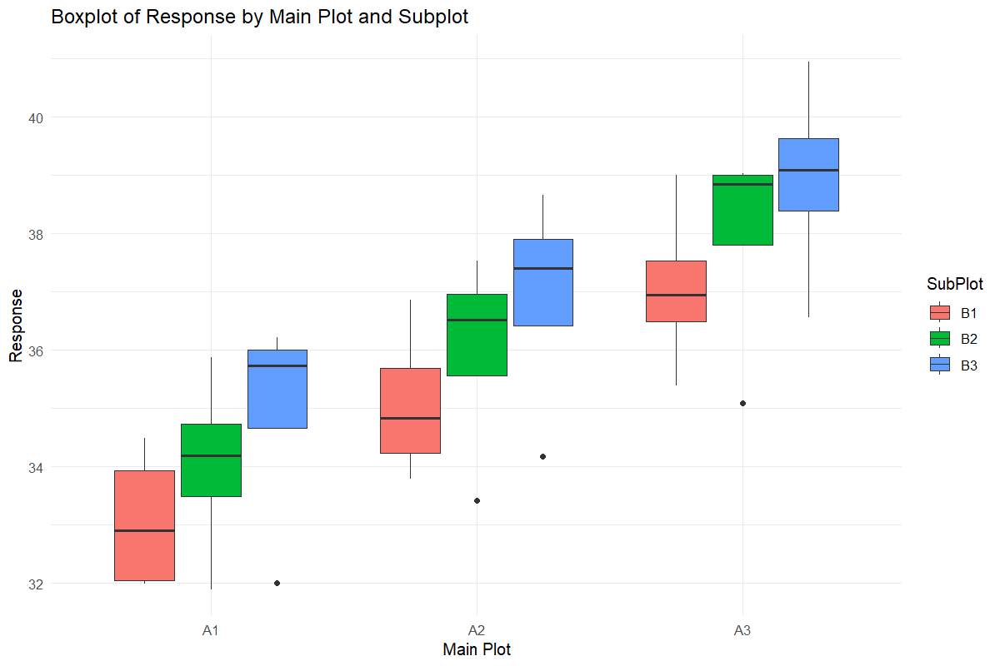
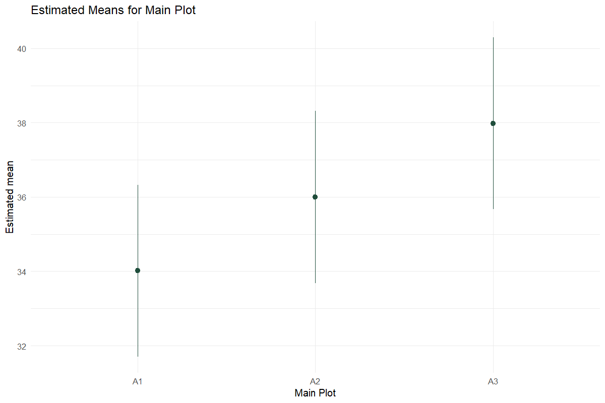
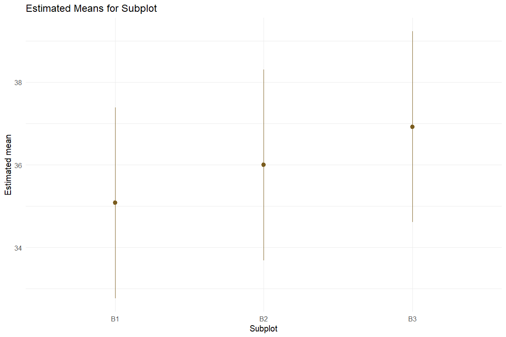
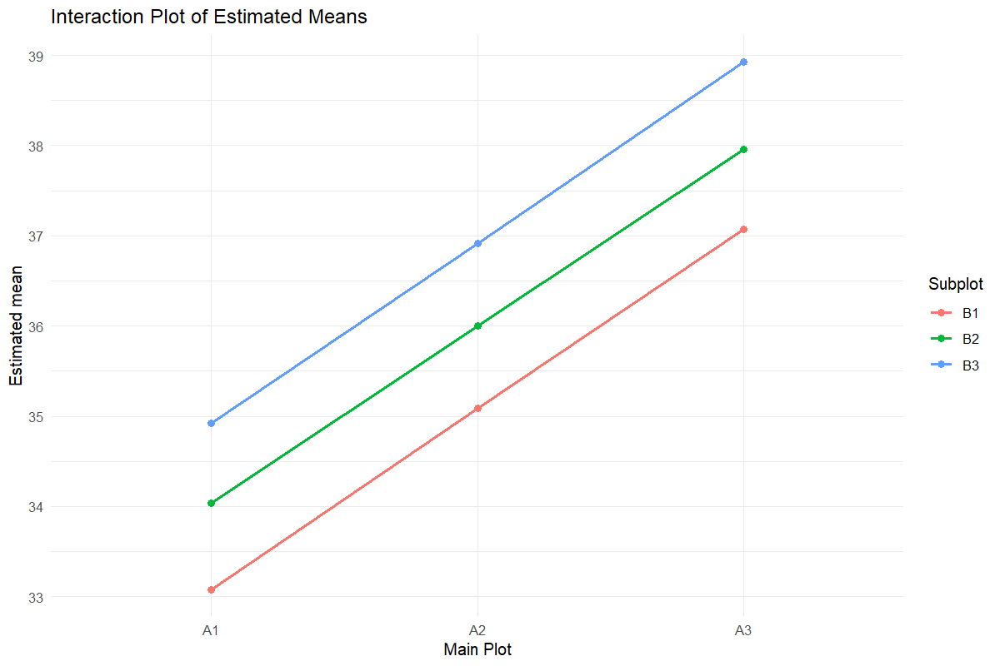
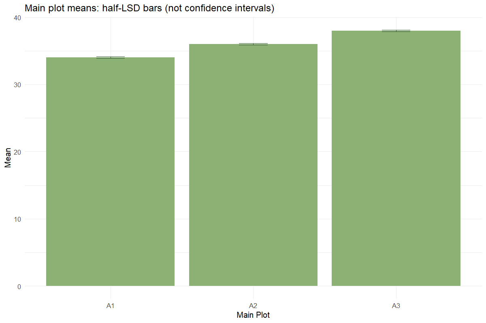
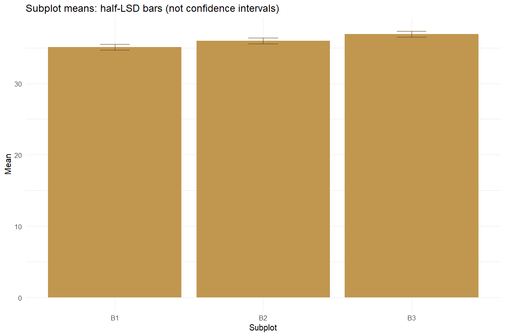
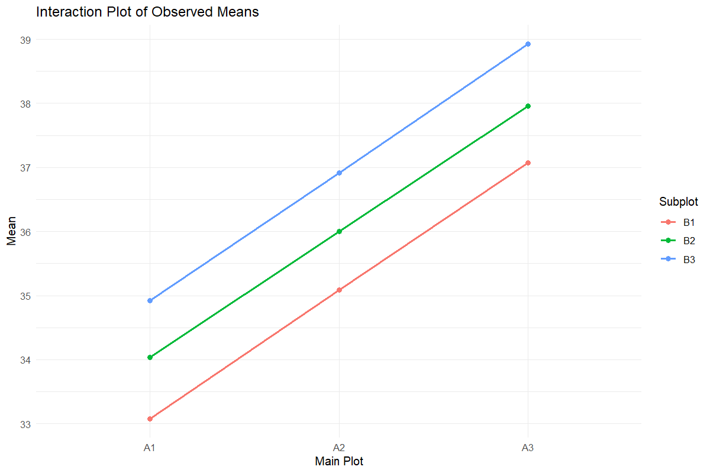

Worked analysis · 1 executable examples
Split Plot
Respect the whole-plot and subplot errors
Question and data
Provide Rep, MainPlot, SubPlot and Value, with one observation per complete cell. Custom columns can be mapped explicitly. The classical tables require a complete balanced design.
Read and report the results
The classical ANOVA uses Error(a) for main plots and Error(b) for subplots and interaction. Comparison summaries report SE(d), not SE(m). Comparisons spanning main plots use an approximate Satterthwaite df. Mixed-model outputs are separately identified.
Run the examples
From the repository root, restore the locked dependencies and load the app functions. These are source-checkout examples, not an installed package API.
source("tools/example-cases.R")
load_drdesign()In Shiny, select this module from its workflow heading, upload the example CSV, map the columns, review observations and run. Each R example states the analysis options to reproduce.
split-plot
Synthetic teaching data; not evidence from a field experiment.
Input
| Rep | Main-plot factor | Subplot factor | Value |
|---|---|---|---|
| R1 | A1 | B1 | 31.992 |
| R2 | A1 | B1 | 33.744 |
| R3 | A1 | B1 | 32.074 |
| R4 | A1 | B1 | 34.494 |
| R1 | A2 | B1 | 33.798 |
| R2 | A2 | B1 | 35.300 |
| R3 | A2 | B1 | 34.382 |
| R4 | A2 | B1 | 36.859 |
Showing up to 8 of 36 observations. The CSV contains every row.
Analysis
data <- expand.grid(Rep=paste0("R",1:4),MainPlot=paste0("A",1:3),SubPlot=paste0("B",1:3))
i <- seq_len(nrow(data))
data$Value <- 30+as.numeric(data$MainPlot)*2+as.numeric(data$SubPlot)+sin(i*1.7)+rep(c(-2,1,0,1),9)
result <- run_split_plot(data)Computed output
dataset 36 rows
| Rep | Main-plot factor | Subplot factor | Value |
|---|---|---|---|
| R1 | A1 | B1 | 31.992 |
| R2 | A1 | B1 | 33.744 |
| R3 | A1 | B1 | 32.074 |
| R4 | A1 | B1 | 34.494 |
| R1 | A2 | B1 | 33.798 |
| R2 | A2 | B1 | 35.300 |
| R3 | A2 | B1 | 34.382 |
| R4 | A2 | B1 | 36.859 |
| R1 | A3 | B1 | 35.397 |
| R2 | A3 | B1 | 37.039 |
| R3 | A3 | B1 | 36.851 |
| R4 | A3 | B1 | 39.000 |
| R1 | A1 | B2 | 31.891 |
| R2 | A1 | B2 | 34.028 |
| R3 | A1 | B2 | 34.359 |
| R4 | A1 | B2 | 35.879 |
| R1 | A2 | B2 | 33.414 |
| R2 | A2 | B2 | 36.272 |
| R3 | A2 | B2 | 36.773 |
| R4 | A2 | B2 | 37.529 |
| R1 | A3 | B2 | 35.090 |
| R2 | A3 | B2 | 38.705 |
| R3 | A3 | B2 | 38.986 |
| R4 | A3 | B2 | 39.041 |
| R1 | A1 | B3 | 32.004 |
| R2 | A1 | B3 | 36.216 |
| R3 | A1 | B3 | 35.940 |
| R4 | A1 | B3 | 35.542 |
| R1 | A2 | B3 | 34.178 |
| R2 | A2 | B3 | 38.670 |
| R3 | A2 | B3 | 37.650 |
| R4 | A2 | B3 | 37.162 |
| R1 | A3 | B3 | 36.566 |
| R2 | A3 | B3 | 40.949 |
| R3 | A3 | B3 | 39.189 |
| R4 | A3 | B3 | 39.002 |
full_anova 3 rows
| SS | MS | Numerator df | Denominator df | F | p-value | Source / term |
|---|---|---|---|---|---|---|
| 94.607 | 47.303 | 2 | 24.000 | 67.730 | <0.001 | MainPlot |
| 20.421 | 10.211 | 2 | 24.000 | 14.620 | <0.001 | SubPlot |
| 0.010 | 0.002 | 4 | 24.000 | 0.003 | 1.000 | MainPlot:SubPlot |
additive_anova 2 rows
| SS | MS | Numerator df | Denominator df | F | p-value | Source / term |
|---|---|---|---|---|---|---|
| 94.607 | 47.303 | 2 | 28.000 | 78.973 | <0.001 | MainPlot |
| 20.421 | 10.211 | 2 | 28.000 | 17.046 | <0.001 | SubPlot |
assumptions 4 rows
| Metric | Value |
|---|---|
| Alpha | 0.050 |
| Interaction p-value | 1.000 |
| Selected final model | Interaction model |
| Random effect | Replication/block as random intercept |
emmeans_main 3 rows
| Main-plot factor | Estimated mean | SE | df | CI lower | CI upper |
|---|---|---|---|---|---|
| A1 | 34.014 | 0.778 | 3.417 | 31.701 | 36.326 |
| A2 | 35.999 | 0.778 | 3.417 | 33.687 | 38.311 |
| A3 | 37.985 | 0.778 | 3.417 | 35.672 | 40.297 |
Results are averaged over the levels of: SubPlot
Degrees-of-freedom method: kenward-roger
Confidence level used: 0.95
emmeans_sub 3 rows
| Subplot factor | Estimated mean | SE | df | CI lower | CI upper |
|---|---|---|---|---|---|
| B1 | 35.078 | 0.778 | 3.423 | 32.767 | 37.388 |
| B2 | 35.997 | 0.778 | 3.423 | 33.687 | 38.308 |
| B3 | 36.922 | 0.778 | 3.423 | 34.612 | 39.233 |
Results are averaged over the levels of: MainPlot
Degrees-of-freedom method: kenward-roger
Confidence level used: 0.95
emmeans_interaction 9 rows
| Main-plot factor | Subplot factor | Estimated mean | SE | df | CI lower | CI upper |
|---|---|---|---|---|---|---|
| A1 | B1 | 33.076 | 0.849 | 4.826 | 30.869 | 35.283 |
| A2 | B1 | 35.085 | 0.849 | 4.826 | 32.878 | 37.292 |
| A3 | B1 | 37.072 | 0.849 | 4.826 | 34.865 | 39.278 |
| A1 | B2 | 34.039 | 0.849 | 4.826 | 31.833 | 36.246 |
| A2 | B2 | 35.997 | 0.849 | 4.826 | 33.790 | 38.204 |
| A3 | B2 | 37.955 | 0.849 | 4.826 | 35.749 | 40.162 |
| A1 | B3 | 34.926 | 0.849 | 4.826 | 32.719 | 37.132 |
| A2 | B3 | 36.915 | 0.849 | 4.826 | 34.708 | 39.122 |
| A3 | B3 | 38.927 | 0.849 | 4.826 | 36.720 | 41.134 |
Degrees-of-freedom method: kenward-roger
Confidence level used: 0.95
tukey_main 3 rows
| contrast | estimate | SE | df | t | p-value |
|---|---|---|---|---|---|
| A1 - A2 | -1.985 | 0.341 | 6.000 | -5.819 | 0.003 |
| A1 - A3 | -3.971 | 0.341 | 6.000 | -11.639 | <0.001 |
| A2 - A3 | -1.986 | 0.341 | 6.000 | -5.820 | 0.003 |
Results are averaged over the levels of: SubPlot
Degrees-of-freedom method: kenward-roger
P value adjustment: tukey method for comparing a family of 3 estimates
tukey_sub 3 rows
| contrast | estimate | SE | df | t | p-value |
|---|---|---|---|---|---|
| B1 - B2 | -0.920 | 0.341 | 18.000 | -2.696 | 0.037 |
| B1 - B3 | -1.845 | 0.341 | 18.000 | -5.407 | <0.001 |
| B2 - B3 | -0.925 | 0.341 | 18.000 | -2.711 | 0.036 |
Results are averaged over the levels of: MainPlot
Degrees-of-freedom method: kenward-roger
P value adjustment: tukey method for comparing a family of 3 estimates
cld_main 3 rows
| Main-plot factor | Estimated mean | SE | df | CI lower | CI upper | Group |
|---|---|---|---|---|---|---|
| A1 | 34.014 | 0.778 | 3.417 | 30.622 | 37.406 | a |
| A2 | 35.999 | 0.778 | 3.417 | 32.607 | 39.391 | b |
| A3 | 37.985 | 0.778 | 3.417 | 34.592 | 41.377 | c |
Results are averaged over the levels of: SubPlot
Degrees-of-freedom method: kenward-roger
Confidence level used: 0.95
Conf-level adjustment: sidak method for 3 estimates
P value adjustment: tukey method for comparing a family of 3 estimates
significance level used: alpha = 0.05
NOTE: If two or more means share the same grouping symbol, then we cannot show them to be different. But we also did not show them to be the same.
cld_sub 3 rows
| Subplot factor | Estimated mean | SE | df | CI lower | CI upper | Group |
|---|---|---|---|---|---|---|
| B1 | 35.078 | 0.778 | 3.423 | 31.689 | 38.466 | a |
| B2 | 35.997 | 0.778 | 3.423 | 32.609 | 39.386 | b |
| B3 | 36.922 | 0.778 | 3.423 | 33.534 | 40.311 | c |
Results are averaged over the levels of: MainPlot
Degrees-of-freedom method: kenward-roger
Confidence level used: 0.95
Conf-level adjustment: sidak method for 3 estimates
P value adjustment: tukey method for comparing a family of 3 estimates
significance level used: alpha = 0.05
NOTE: If two or more means share the same grouping symbol, then we cannot show them to be different. But we also did not show them to be the same.
diagnostics 36 rows
| Observation | Fitted | Residual |
|---|---|---|
| 1 | 30.966 | 1.025 |
| 2 | 33.820 | -0.075 |
| 3 | 33.314 | -1.239 |
| 4 | 34.205 | 0.290 |
| 5 | 32.975 | 0.823 |
| 6 | 35.829 | -0.529 |
| 7 | 35.322 | -0.940 |
| 8 | 36.213 | 0.646 |
| 9 | 34.962 | 0.435 |
| 10 | 37.815 | -0.777 |
| 11 | 37.309 | -0.458 |
| 12 | 38.200 | 0.800 |
| 13 | 31.930 | -0.038 |
| 14 | 34.783 | -0.755 |
| 15 | 34.277 | 0.082 |
| 16 | 35.168 | 0.711 |
| 17 | 33.887 | -0.473 |
| 18 | 36.741 | -0.469 |
| 19 | 36.235 | 0.539 |
| 20 | 37.126 | 0.404 |
| 21 | 35.846 | -0.755 |
| 22 | 38.699 | 0.006 |
| 23 | 38.193 | 0.793 |
| 24 | 39.084 | -0.043 |
| 25 | 32.816 | -0.812 |
| 26 | 35.669 | 0.547 |
| 27 | 35.163 | 0.778 |
| 28 | 36.054 | -0.512 |
| 29 | 34.805 | -0.628 |
| 30 | 37.659 | 1.011 |
| 31 | 37.152 | 0.497 |
| 32 | 38.043 | -0.881 |
| 33 | 36.817 | -0.251 |
| 34 | 39.670 | 1.279 |
| 35 | 39.164 | 0.025 |
| 36 | 40.055 | -1.053 |
split_anova 6 rows
| Source / term | df | SS | MS | F | p-value |
|---|---|---|---|---|---|
| Replication | 3 | 61.122 | 20.374 | NA | NA |
| MainPlot | 2 | 94.607 | 47.303 | 712.251 | <0.001 |
| Error(a) | 6 | 0.398 | 0.066 | NA | NA |
| SubPlot | 2 | 20.421 | 10.211 | 11.232 | <0.001 |
| MainPlot:SubPlot | 4 | 0.010 | 0.002 | 0.003 | 1.000 |
| Error(b) | 18 | 16.363 | 0.909 | NA | NA |
split_interaction_means 9 rows
| Main-plot factor | Subplot factor | Mean |
|---|---|---|
| A1 | B1 | 33.076 |
| A2 | B1 | 35.085 |
| A3 | B1 | 37.072 |
| A1 | B2 | 34.039 |
| A2 | B2 | 35.997 |
| A3 | B2 | 37.955 |
| A1 | B3 | 34.926 |
| A2 | B3 | 36.915 |
| A3 | B3 | 38.927 |
split_lsd_cv 4 rows
| Comparison | Error MS | df | SE(d) | CD | CV (%) |
|---|---|---|---|---|---|
| Main plot | 0.0664137970738634 | 6 | 0.105 | 0.257 | 0.716 |
| Subplot | 0.909075642374039 | 18 | 0.389 | 0.818 | 2.649 |
| Subplot within main plot | 0.909075642374039 | 18 | 0.674 | 1.416 | NA |
| Main-plot means at same/different subplot levels | Ea: 0.0664137970738634; Eb: 0.909075642374039 | DFa: 6; DFb: 18 | 0.560 | 1.172 | NA |







Reporting conventions
Tables: estimates and standard errors to 3 decimals; p-values below 0.001 shown as <0.001. Very small or large values use scientific notation. NA means unavailable or not applicable. CSV files retain numerical precision. Confidence levels and multiplicity corrections follow the stated analysis settings; shared letters indicate non-rejection, not equivalence.